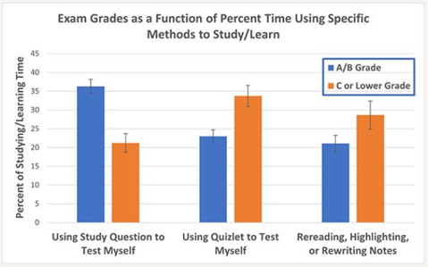

In this course, our goal is for you to learn about and understand the
science of clinical psychology, its application to the real world, and
the limitations and strengths of the clinically relevant research and
claims you encounter. We have created this document to describe
evidence-based strategies for learning and applying the course material,
as well as preparing for exams.
Attend and Participate
in Every Class Session
- Attend every lecture and class discussion section. Attendance
is important for learning the material. Get notes if you miss a
class.
- Take good notes in every lecture and discussion section, and
while doing the readings. We purposefully leave blanks in our Powerpoint
slides that necessitate notetaking. Taking notes will facilitate active
learning AND be useful when preparing for exams. Don’t try to copy down
verbatim what the instructor or TA is saying. Rather, think about the
new concepts they are introducing and find ways to summarize the new
information in ways that will make sense to you later along the way.
Review your notes carefully, and let your TA or Professor Petersen know
if you have any questions or points of confusions!
- Participate fully in active-learning opportunities in lectures
and discussion sections. We will try to provide opportunities in
every class session to discuss ideas with your neighbors, to write about
your perspectives, and to answer questions or solve problems on the
Powerpoint slides.
- Ask questions in class (we’ll address as many as we can!).
And ask questions outside of class. You can do this right after class or
discussion section. You can come to office hours with any of the TAs or
with Professor Petersen. You can email questions to any of the TAs or
Professor Petersen. You can also ask other students in the class or in
your study group about your questions. We know that it can be
anxiety-provoking to talk with your TAs or course instructors, but we
all love talking with students, and we’re really good at figuring out
what is confusing you and then helping you to understand it better!
Do All of the Required
Readings and Assignments
Completion of the required readings and assignments is an important
prerequisite for learning the material.
Pay Particular
Attention to What is Most Important
There is too much content in the class to remember everything, so it
is important to prioritize studying the most important information.
Pay close attention to things that are emphasized, including
things that are talked about more than once. Certain concepts will
be emphasized much more than others. If we discuss something several
times or with greater emphasis, it is because it is a critical concept
and we want to make sure you understand it. Listen for themes that come
up in both lecture and discussions sections. Make sure you understand
what is important about them!
Pay particular to the take-away messages of each lecture,
discussion section, and reading. When you read an article or review
a lecture, ask yourself: “What are the main messages Professor Petersen
wants us to hear?” After attending lecture and the discussion sections,
close your notes and ask yourself, “What were the main points that
Professor Petersen or the TA emphasized and what was important about
them?” Similarly, after reading the assignment for discussion sections
or lecture, turn the material face down and ask yourself, “What was
important about this reading? What about this is relevant to lecture and
section? What are the main things to learn?” If you read a research
article, ask yourself “What are the main findings? What are the
strengths and limitations of the study?” Have the reading quiz
open while reading the article, to help guide your reading so
you make sure you take away the key points of the reading.
Pay attention to the examples Professor Petersen and the TAs use
in lecture and section. Examples will help place the different
concepts into context. Think about the different examples given in class
and use them to learn how each concept can be applied. This should give
you a better understanding of what might otherwise be an abstract
concept.
Focus on understanding the concepts, not just memorizing the
details. Students are often taught to memorize facts to be successful in
class. Although memorizing some facts will be helpful in this class, we
really want you to understand how the facts are applied in
clinical psychology. Thus, many test questions will require that you
both know the facts and understand more abstract concepts. To succeed in
this class, it is important that you think deeply about and learn to
apply the knowledge from lecture and section, rather than simply
memorizing it. You will do best on exams if you go beyond memorizing and
critically think about the ideas we present in lecture and discussion
sections. In addition to understanding the concepts and technical terms
we have discussed, you should understand why they are important and how
to apply them. Compare concepts discussed in class and think about how
they are similar or different. Apply concepts to real world scenarios
and think through the examples presented in class. Put the concepts into
your own words and try to teach them to someone else. This helps you
figure out what you do and don’t understand, which puts you in a better
position to ask specific questions after class or in office hours.
Regarding the types of questions you may be asked on the exam, you do
not need to memorize dates, names, or exact numbers, unless the
date/name/number was stressed in class or section, but you will be
expected to know general trends that we emphasized.
Use Effective Study
Strategies
Schedule Study
Time
Do not leave things for last minute. You will have a lot to
study before you know it. Try to keep up with the material and ask
questions if you have them.
Study for shorter but more frequent periods. One of the
BEST things you can do to learn the course material is
study for a shorter amount of time, on multiple days a week,
and for every week of the semester. Research clearly
indicates that this is a much more effective approach than cramming your
studying into two or three longer study sessions right before the exam.
In a nutshell, the research on studying tells us that humans best
remember information when they practice recalling that information
across numerous study sessions.
For instance, if you budget one hour to learn all the different types
of reliability and validity, you will be more likely to remember them on
test day if you study them for 15 minutes across four days rather than
studying them for a single hour at one time. Thus, even though you’re
not studying the information for any longer, spreading out the times
that you study (i.e., revisiting the material again and again for
briefer study sessions) is the best approach to successfully remembering
the information on test day and beyond the course itself.
We recommend studying the course material for 4–5 hours per week
across three 90-minute study sessions or across four-to-five 60-minute
study sessions. We suggest scheduling these study sessions in your
calendar to occur every week just like you would your classes. Here is
an example of what your study session schedule might look like:
| 8:00–9:30 |
|
11:30–1:00 |
5:30–7:00 |
|
Now that you have scheduled regular study sessions, what is the most
effective way to design your study strategy within each session?
Research indicates that the most effective study strategy spreads out
testing yourself on different parts of the material
within study sessions as well as
between study sessions. For instance, if you want
to remember the inclusion and exclusion criteria for mental disorders,
you might test yourself on what you remember, check your answers, and
then move on to study something else. Then, at the end of the same study
session, you could test yourself again on inclusion and exclusion
criteria and check your answers. You could also decide to test yourself
on these criteria at the start of each study session for a week, until
remembering the information becomes easy and you can recall it
automatically. This helps your brain practice successful remembering. If
something is difficult to remember, try struggling with it before you
show yourself the answer. Memory works sort of like a muscle, so
challenging your brain to remember something difficult can help you
remember more successfully the next time.
Below, we’ve included an example week of how individual study
sessions might be structured using the spaced-out approach during a
week early in the semester, when you have had the first three lectures
and have already spent some time studying the first two lectures. Keep
in mind that the third lecture has more material than the first two
lectures and is the most recently learned (so the least studied). Thus,
it is allotted the most time. Imagine spending 15–20 minutes on each
block within a session. Customize these study sessions to spend the most
time on course material that feels the most challenging to you and less
time on material that you feel more confident about. As you can see,
the lectures repeat across days and within single study sessions, and
the study approaches draw from a variety of the effective study
techniques we described in more detail in discussion section (and
below!).

Example Study Schedule
Test Yourself
One of the BEST ways to learn the course material
and do well on the exams is to test yourself on
key concepts, their distinctions, and their implications/applications,
rather than just re-reading or re-writing your notes over and over
again. There are three testing methods that we highly recommend
this semester.
First, use Quizlet to test your
ability to provide definitions for key concepts. We have created Quizlet
study sets for each lecture; for instructions how to access them, see here. Note that you can use Quizlet as a
strategy for organizing your self-learning, too. We recommend that you
use the “Flashcards”, “Test”, and “Match” study methods. “Match”
evaluates your ability to recognize or identify the correct definition
for each term. This is the easiest approach and is a good starting
place. “Test” also evaluates your ability to recognize or identify the
correct definition for a term but uses a variety of testing strategies.
This study method is more challenging than “Match”. “Flashcards”
evaluates your ability to recall the correct definition for each term.
This study method is the most challenging.
Second, complete all study questions for each lecture and all
practice exam questions for each exam, which you can find in the
“Study Questions” and “Practice Exam Questions” folders, respectively,
of the “Files” tab in ICON. The study questions and practice exam
questions are a great tool that will help you check for understanding of
concepts. There are multiple-choice questions, for which all correct
answers are provided. And there are open-ended questions, for which
sample correct responses are provided. The latter type of question is
particularly challenging, because research clearly demonstrates that
trying to put class-related material into your own words is one of the
best ways to learn new material and figure out what is confusing to
you.
Third, ask yourself questions about the material you have
studied, answer them, and THEN check to see if you are correct. For
example, after reviewing the first lecture, you might close your
materials, then ask yourself “What are the four main measurement
strategies in scientific clinical psychology, and how are they defined?”
or “What are some key characteristics of scientific clinical
psychology?” or “What are some key challenges facing scientific clinical
psychology?”
In a prior semester of the class, the students who received the
highest grades tended to spend relatively more time using Study
Questions to test themselves compared to using Quizlet or rereading
their notes (see figure below).

Grades by Study Method in Prior Semester
Put Material Into
Your Own Words
Another one of the BEST ways to learn the course
material and do well on the exams is to put the course
material into your own words or try to explain
the material to someone/something else (including your ceiling
fan).
Close your notes on a particular portion of the material and then ask
yourself some of the following questions or explain them to
someone/something else: “What are the main points, concepts, and
findings, in my own words? What is important about key points, concepts
and findings, in my own words? What might another example of a key
concept be? How can key concepts be applied? How do key concepts differ
from one another, in my own words?”
Similarly, after reading a research article for discussion section,
turn the material face down and ask yourself some of the following
questions: “What is important about this reading, in my own words? What
about this paper is relevant to our course? What are the main findings?
What are the strengths and limitations of the study??
These approaches—which move beyond memorizing concepts—will help you
more deeply understand and learn to apply course material, which is
critical to success in this course. These approaches also help you
figure out what’s confusing you, so you’re in a better position to ask
questions during/after class, over email, or in office hours.
Study With Peers
Join a peer study group! Students can learn a lot from studying with
their peers. Studying with peers can help students gain better
understanding of where their knowledge of course material is stronger
and which topics they need to study more. Moreover, providing
instruction to other peers can help consolidate your own learning.
Contact the instructor team if you want to join a peer study group.
Go Easy on Less
Effective Study Strategies
Finally, we’re going to touch briefly on what doesn’t work
well when trying to learn course material and prepare for
exams. Research tells us that re-reading or re-writing notes over and
over again doesn’t improve your understanding of course material and
test performance, even though it may feel like the material is becoming
easier or more familiar. As we noted above, cramming most of your
studying into the day or two before the exam also results in less
understanding and poorer test scores. Active learning and testing
methods are key to improving understanding and doing better on exams,
even if they feel more challenging. Thus, we urge you to test yourself
using Quizlet, complete the Study Questions, ask yourself questions, and
try to put course material into your own words!
Use Effective
Test-Taking Strategies
- Arrive early and relax in the minutes before the exam. You might
focus on your breathing, close your eyes and focus on vividly recalling
a relaxing scene or experience, or slowly clench and release some muscle
groups in your body.
- Make an initial rapid pass through the exam in which you answer
every question you can. Don’t spend too long on any single question—just
flag the ones about which you are uncertain and move on. But do read the
instructions, the questions, and the responses carefully, so you don’t
make careless errors.
- On your second pass through the exam, take a little longer (but not
too long!) on each of the remaining questions and make your best call on
each one.
- Leave time to review your answers if you can.
- Keep a good eye on your time, and manage your time well, so that you
have sufficient time to make both the first and second pass through the
exam.
- Ask questions if you have them. We’ll let you know if we can’t
answer them.
- Get a good night’s sleep before the exam! This will improve your
long-term memory for course material and make it easier to access during
the exam.
- Get some exercise or engage in physical activity of some sort (even
a brief walk!). Physical activity can improve your ability to focus on
challenging tasks and reduce your anxiety about the exam.
- Evaluate your performance and the adequacy of your preparation after
the exam (both before and after you know how you did!). What worked
well, and what should you consider doing differently when preparing for
and taking the next exam? Feel free to come discuss this with the TAs or
Professor Petersen!
Ask Us Questions and
Let Us Know When You’re Confused
Every one of us—including your TAs and Profs!—have questions and get
confused about course material sometimes. When this happens to you (and
it will!), remember that you have a lot of options: you can ask
questions inside or outside of class, you can come to office hours with
us, and you can email us. We know that talking with us can be
challenging, but we encourage you to get outside your comfort zone and
give it a try! üòä We all love working with students, and we all want you
to succeed in our class. Ask for help when you need it!
